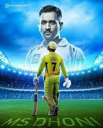

Tribute to MS Dhoni
The one who motivated millions of people to play cricket

Synonym for Success
Here's the biography and achievements of Ms Dhoni:
- 1981 - Ms dhoni was born:Ms Dhoni was born in jharkand. He was popularly known as captain cool
- 1998 - Domestic Career Entry:At the age of 18, Agnes decided to dedicate herself to God's work. She became a nun and changed her name to Teresa.
- 1999 -Ranji Trophy:Dhoni debuted for Ranji Team for 1999-2000 season
- 2004 -Team India call: After seeing Dhoni's game, the captain Sourav Ganguly and the team selectors decided to select Dhoni in International Indian Cricket Team in 2004 and Dhoni made his international debut. Mahi was one of the player among 15 player in the team. Journey Began from 0 In 2004 there was a series against Bangladesh Dhoni was also selected in 11 team players but he had not performed well. In his first international match Dhoni was run out at 0. Apart from that match, in the rest of the series, his performance was not too good.
- Extradionary Bounce Back After some time the captain had shown trust inMahi and his amazing wicket-keeping skillsand select him for the series against Pakistan. Dinesh Kartik was also a good and strong competitor of Dhoni. While Dinesh was already in the team, questions were also being raised on Dhoni's selection. In the second match of the Pakistan Series, SouravGanguly want to give enough time to Dhoni, so he decided to send himto Number 3. Dhoni came to bat and this time Dhoni came up with a different mind set. Mahi started to shower fours and sixers. And In his fifth international encounter, he scored 148 runs in 123 balls. against Pakistan, demonstrating excellent batsmanship.This inningwas the first International Century of Dhoni. With his performance, Dhoni was made an irreplaceable place in the team and the heart of every Indian as well.He entered India's Test team a year later, swiftly establishing himself with a century against Pakistan.
- Captain for world cup Tour: Shortly before the World Cup in 2007, India was not doing well in international matches. India has faced many defeats andthecaptain SouravGanguly resigned from captaincy. The team had to go to South Africa for T20 World Cup. When team officials asked Sachin about captaincy, he took the first name of Mahi. Team Management agreed with Sachin's opinion and selected Dhoni as the captain of the Indian Team forWorld Cup Tour 2007.And that's how we got our CaptainCool..
- 2007 - T20 World Cup:The team was performingexcellently. The Indian team was looking very strong and winning matches one after the other. India defeated Australia, South Africa, and Pakistan. The team was performing great in the leadership of MS and India reached to the finals of world cup.Although India set a very low score against Pakistan yet the bowlers, fielders, and Dhoni's strategies were able to defend such a low score.
- Dhoni as Thala: Indian Premier League (IPL) has also started in 2008. And Dhoni e was the highest page cricketer in the IPL auction. Dhoni has started playing for CSK (Chennai Super Kings).
Under Dhoni's leadership, Chennai Super Kings have won the IPL title 3 times. The team of Chennai Super Kings has played the most number of final matches eight times in the history of IPL which is a record in itself.Dhoni is not MS Dhoni for Chennai Cricket Lovers, he will be the Thala forever.
ICC ODI World Cup 2011
In 2011, at this time India was the host country for ODI World Cup.The confidence of the Indian team was high. And the world cup was going well. India won matches, by defeating Bangladesh, Ireland, Netherland, and West Indies. India entered into quarter-finals against Australia. India won this match and beating Australia, the top team in the cricket world reached the semi-finals. On 30 March 2011, India played semi-finals against Pakistan (which was a strong team at that time) in Mohali. India won the semi-finals by 29 runs and reached the Finals of World Cup. As the team was winning the matches, all the Indians were beating and everyone was expecting that this year we will win the World Cup in our own home. India and Srilanka played finals on 2 April 2011 at Wankhede Stadium, Mumbai. Batting first, Sri Lanka had set a target of 274 runs for India. Virat Kohli and Gautam Gambhir took charge of India's innings after the first two wickets fell. Dhoni came to bat early and took charge of the team's innings. Dhoni played an unbeaten inningof 91 runs in 79 balls to give India victory before the entire 50 overs were played.India won the match by 6 wickets after 28 years.And India became the first country to win the ODI World Cup on its land.. - 1979 - She is awarded great honors:Mother Teresa was awarded many honors for her works, included the Nobel Peace Prize in 1979. Other awards were the Medal of Freedom and the Order of Merit from Queen Elizabeth.
Trust the process result will follows it. —Ms Dhoni